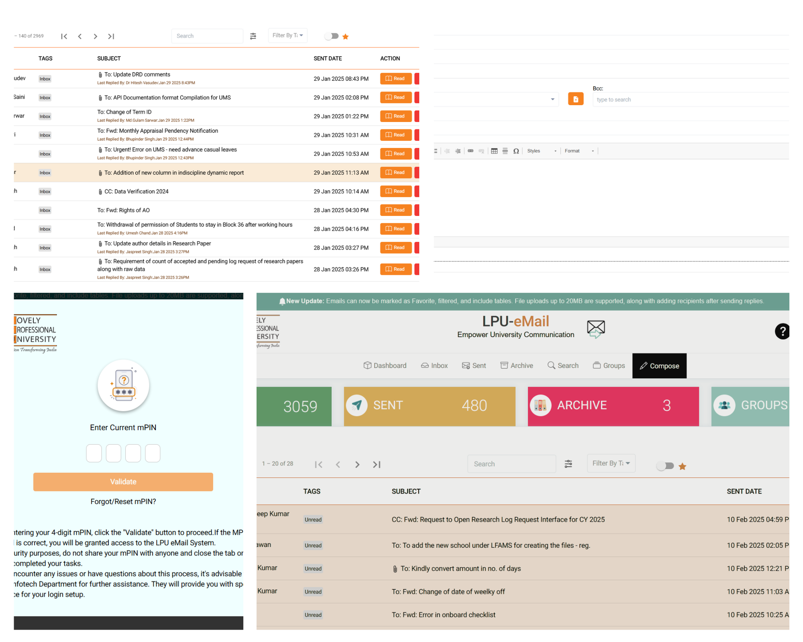

Bhupinder Singh
Project Details
LPUeMail Application (Internal Messager)

The Angular-based Email Application is designed to facilitate internal
communication within an
organization while providing robust security measures and a user-friendly
interface. It enables users to send
messages and attachments akin to an email system. The application boasts
several key features:
- User Authentication & Security
- Dashboard Overview
- Inbox Management
- Compose & Messaging
- Outbox & Sent Items
- Group Messaging Management
- Message Archival System
- Notification System
- Template Management
- Forwarding & Printing
- Settings & Customization
- Search & Filter
Library Resource Feedback
The Library Resource Feedback client-side application is designed to collect
feedback from both stay and
students visiting the university library by retrieving attendance data from
biometric and turnstile machines. Its
primary goal is to gather insights and ratings regarding the library's
resources. Key components and features of
this application include:
- Attendance Tracking & Integration
- Library Feedback Collection
- Feedback Reminder System
- Feedback Review & Action Management
- Library Resource Assessment
- Corrective Actions & Progress Tracking
- User Engagement & Notification
- Feedback History & Reporting
- Power BI Dashboard & Analytics
Research and Development Cell Management System
The Research and Development Cell Management System streamline the
management of research activities by
handling proposals, grant applications, and project tracking, while
documenting academic achievements and intellectual property. They also
support PhD scholar supervision and conference approvals. Integrated
dashboards and analytics provide data-driven insights for accreditation and
performance evaluation.
- Research and Academic Achievements Management
- Research Proposal and Funding Management
- Research Grants and External Funding
- Research Project Management
- Conference and Seminar Management
- Intellectual Property Rights Management
Human Resource Management System (HRMS)
A comprehensive system designed to streamline HR administrative tasks,
reducing paperwork and enhancing
productivity within the organization.This system is available in both
desktop and web-based versions,
empowering HR managers to ezciently handle diverse tasks, from recruitment
to employee evaluation and
administrative processes. This comprehensive system encompasses various
functionalities, providing
capabilities such as:
- Employee Information Management
- Recruitment and Onboarding
- Payroll Management
- Time and Attendance Management
- Leave Management Module
- Performance and Appraisal Management
- Employee Communication and Self-Service Module
- Cases/Incident Management Module
- Analytics and Reporting
Residential Services Management System
The Residential Services Management System streamlines campus housing by
managing accommodations, hostel admissions, meal services, and facility
maintenance. It integrates modules for student attendance, fee payment,
complaint resolution, and safety compliance, ensuring efficient operations.
Specialized features like electricity monitoring, visitor management, and
emergency protocols further enhance a secure and responsive residential
environment.
- Accommodation Management
- Hostel Admission and Registration
- Meal Management Services
- Leave and Attendance Management
- Room and Facility Maintenance
- Student Reporting Management
- Visitor Management
- Student Engagement and Activities
- Electricity Management
Human Resource Development Center Management System
The Human Resource Development Centre oyers a diverse range of courses aimed
at enhancing both
administrative and academic skills for internal and external participants.
These courses can be conducted either
online or offine, fostering clear and eyective communication among
participants, instructors, and
administration. Key features of this system include:
- Faculty Development and Training Management
- Training Attendance and Records Management
- Training Scheduling and Resource Allocation
- Training Feedback and Evaluation
- Training Proposals and Approvals
- Self-Development and Career Growth Tracking
- Course and Training Material Management
- Training Needs and Outcome Analysis
- Image Gallery and Documentation